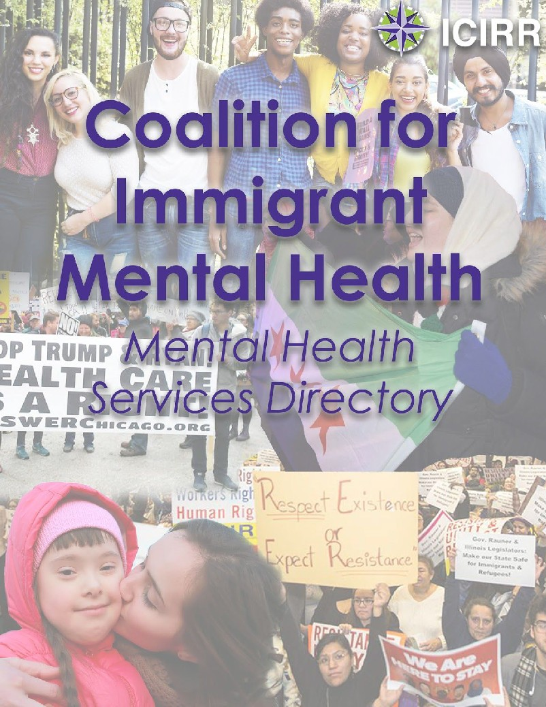

About the Mental Health Services Directory
The Coalition for Immigrant Mental Health has individually contacted each of these organizations to confirm the services listed and their costs and requirements. You do not have to disclose any immigration information to anyone while seeking mental health services. What’s more, except in certain very limited circumstances, Illinois and federal law prevents clinicians from sharing any mental health record with anyone without your written consent. While this database is updated frequently to reflect changes, there is a possibility that the information listed is not up to date. For more information, you can visit:
https://www.illinoislegalaid.org/legal-information/confidentiality-mental-and-developmental-disabilities
http://www.apa.org/helpcenter/confidentiality.aspx
La Coalición por la Salud Mental Inmigrante ha contactado cada una de estas organizaciones para
confirmar los servicios incluidos, requisitos, y precios. No es necesario de proveer datos personales sobre su situación de inmigración mientra pida servicios de salud mental. Las leyes de Illinois y al nivel federal prohíben a los clínicos compartir archivos de salud mental con otros sin su permiso en escrito. Aunque este directorio es actualizado frecuentemente, hay una posibilidad que alguna información no sea actual. Para más información, puede consultar (en inglés):
https://www.illinoislegalaid.org/legal-information/confidentiality-mental-and-developmental-disabilities
http://www.apa.org/helpcenter/confidentiality.aspx
Mental Health Services Directory
Services for Uninsured and Low-income Individuals. Updated Regularly. Last updated: 7/12/17
---- Chicago Area Services ----
ACCESS Family Health Society
152 W Lincoln Hwy
Chicago Heights, IL. 60411
PH: 708-754-9687 | Hours: M-Th- 8am-7pm, F- 8am-4pm, Sat- 8am-12pm
2. Bloomingdale location
245 S Gary Ave
Bloomingdale, IL. 60108
PH: 630-983-5230 | Hours: M/W/Th- 8am-8pm, Tu- 8am-7pm, F- 8am-5pm, Sat- 8am-12pm
Website: https://www.achn.net/locations/location-pages/access-family-health-society/
● Accepts uninsured clients
● Fees on sliding scale, but must bring the following:
○ Photo ID: driver’s license, state ID, or passport
○ Proof of address: 2 pieces of mail
○ Proof of income: 2 pay stubs, income tax forms, or letter from employer, etc
● Accepts cash, credit/debit/personal checks
● Services: individual/couples/family counseling
● Child/adolescent/adult
● Languages: English, Spanish, Tagalog, Urdu, Hindi, Gujarati, Marathi, Vietnamese, French, Lithuanian, Bengali. Language availability varies by location.
Ann & Robert H. Lurie Children’s Hospital Chicago
225 E. Chicago
Chicago, IL 60611
PH: (312) 227-6039 | Hours: 24 hours
Website: https://www.luriechildrens.org/en-us/Pages/index.aspx
● Services: Individual therapy, family therapy, group therapy, crisis intervention
● Short-term urgent care, inpatient and partial hospitalization
● Ages 0-15
● Languages: available through phone interpretation
● Insurance: Medicaid, private insurance, self-pay
● Photo ID required for responsible party: State ID, driver's license, passport
Asian Human Services Family Health Center
2424 W. Peterson Ave. Chicago, IL 60659
PH: (773) 761-0300 | Hours: Mon-Friday 9am-5pm, Thurs 9am-7pm
Website: http://www.ahschicago.org/contact-us
● *** NEED REFERRAL FROM PCP IN ORDER TO RECEIVE ANY SERVICES **
● Accepts uninsured clients
● Fees on sliding scale
● Services: integrative behavioral health; individual, group therapy (offered at Broadway location), children ages 6 and up.
● Approx 1 week wait for appt
● Languages: Mandarin, Spanish, Arabic, Khmer, Tagalog, English
● ID requireD: State ID or driver’s license; health insurance card (if applicable), referral letter from PCP required
● Broadway location- medicaid needed.
Between Friends
P.O. Box 608548
Chicago, IL. 60660
PH: (773) 274-5232 | Hours: M-W 8am-8pm, Th-Fri 9am-5pm
CRISIS LINE: (800) 403-HELP (4357) Website: www.betweenfriendschicago.org
● Services: domestic violence crisis intervention
● Languages: Spanish, Arabic, French, English
● Services are for adolescents & adults
● FREE
● No photo ID required
Cathedral Counseling Center
50 E. Washington St. #301
Chicago, IL 60602
PH: (312) 252-9500 | Hours: Mon-Friday 9am-5pm, Sat 9am-3pm
Website: http://www.cathedralcounseling.org/
● Accepts uninsured clients
● Pricing dependant on stated income; intake department will discuss payments/ pricing;
typically client seen once per week for $48- $185
● Services: individual, groups, and couples therapy
● Must be 18 years or older for services
● Wait list varies but normally approximately 2 or 3 weeks
● Languages: Spanish, English
● ID: state and driver's license, and temporary drivers license ok, but “it wouldn't disqualify someone if they didn't have those.”
Chicago Center for Family Health
20 N. Wacker Dr., Suite 1442
Chicago, IL 60606
PH: (312) 372-4745 | Hours: Vary
Website: http://ccfhchicago.org/
● Accepts uninsured clients
● Payments based on sliding scale
● No photo ID required
● Services: Large network of therapists, individual, couples, family counseling; most with child and adolescent experience, grief, & trauma
● Age range: child / adolescent / adult
● Language: French, no Spanish speaking, middle eastern refugees
Chicago Family Health Center
Various Locations
PH: 773-768-5000| Hours:
Website: http://chicagofamilyhealth.org/
● * Check back soon for more information *
Circle Family Health Care Network
1201 South Campbell
PH: 773-379-1480 | Hours:
Website: http://www.circlefamilycare.org/cgi-sys/defaultwebpage.cgi
● * Check back soon for more information *
Consuelo Therapeutic Services
6149 S. Kenneth Ave
Chicago, IL 60629
PH: (773) 581-4357 | Hours: Mon - Fri: 9am- 5pm
Website: http://www.consueloinc.org/
● Uninsured clients welcome. Call to make an appointment.
● Languages: Spanish, English
● Must be a resident of the city of Chicago
● Picture ID required, Matricula accepted
● Services: Individual and family counseling
● Must be 3 years or older for services
● Sliding scale for services. Initial $75 flat fee. Services range from $35 - $65 depending on household number and income.
● Wait list times may vary
El Circulo/The Circle Resource Center for Women
2648 W Pershing Rd. Chicago, IL. 60632
PH: 872-444-5148 | Hours: M-F: 9am-12pm, 1pm-5pm
Website: http://thecircleresourcecenter.org/
● * Check back soon for more information *
Erie Family Health Center
Various locations
PH: 312-666-3494 | Hours:
Website: http://www.eriefamilyhealth.org/
● * Check back soon for more information *
Englewood MHC
641 W. 63rd St. Chicago, IL 60621
PH: 312-747-7496 | Hours: M-F: 8:30am-4:30pm
Website:
● Accepts uninsured clients-- must be residents in the city of Chicago.
● Come in as a walk in during the hours of 8:30-12, bring picture ID, social security card, and proof of income if possible.
● Services: Individual, group therapy, and classes (such as no smoking class, and anger management class.)
○ Must be 18 years or older for services.
Greater Grand/MID-South Mental Health Center
4314 S. Cottage Grove
Chicago, IL 60653
PH: 312-747-0036 | Hours: M-F:8:30am-4:00pm
Website:
● Uninsured clients welcomed
○ Sliding scale fees based on client’s current income. Cash only for payments.
● Services: individual outpatient mental health counseling, and medication monitoring/administration.
○ Must be 18 years or older for services.
● No current wait list, and they do not schedule appointments over the phone. Walk-ins welcome to begin intake procedure.
● Driver’s licence/State ID, or another form of picture ID such as a school ID is acceptable temporarily.
Greater Lawn Mental Health Center
4150 West 55th Street
Chicago, IL 60632
PH: (312) 747-1020 | Hours: Mon - Fri: 8:30 am - 4:30 pm. Website:
● Uninsured clients welcome
● Call to make an appointment
● Languages: Spanish, English
● Must be a resident of the city of Chicago
● State ID, Temporary Visitor's Driver’s License, Matricula
● Services: Individual and group therapy
● Must be 18 years or older for services
● Sliding scale for services
● No wait list at this time
Heartland Health Center- Lincoln Square
2645 W. Lawrence Ave. Chicago, IL 60625
PH: (773) 275-1680 | Hours: Mon-Thurs 8:30 am - 5pm, Fri 9am-5pm
Website: https://www.heartlandalliance.org/index-3/directory/hhcs_outpatient_services/
● Accepts uninsured clients
● Fee is on sliding scale
● Services: individual counseling only
● 4 to 6 week wait for appt
● Sees pediatric and adult clients
● Photo ID required: driver’s license, state ID, passport
● **must be seen through health clinic first and obtain referral for psychiatric service
Heartland Health Center- Wilson
845 W. Wilson Ave. Chicago, IL 60640
PH: (773) 506-4283 | Hours: Mon 8:30am-7pm; Thurs-Fri 8:30 am - 5pm, Sat 8:30am-12pm
(only the 2nd and 4th Sat of every month)
Website: http://www.heartlandhealthcenters.org/locations/hhc-wilson/
● Accepts uninsured clients
○ Sliding scale fee based on proof of income.
● Services for all ages: individual, family, group counseling, adult and child psychiatry, substance abuse counseling, and referrals to community resources.
● Photo ID required: driver’s license, state ID, passport
● Spanish speaking therapist, and translator line available.
● Make a new patient appointment, arrive 30 mins before, bring ID, and proof of income prior to services for mental health. Note: you must see a doctor in order to have access for mental health.
Holbrook Counseling Center
Holy Name Cathedral
730 N. Wabash Ave. Courtyard Building
Chicago, IL 60611
PH: (312) 655-7725 | Hours: varies Website: https://www.catholiccharities.net/Portals/0/Programs%20and%20Services/Counseling/Holbrook/
2013_HolbrookBRCH_ENG_PRINT.pdf
● Psychiatric services
● Accepts uninsured clients (also accepts Medicare, Medicaid, Aetna, BCBS)
● Fees based on sliding scale
● Services: individual, family, couples counseling
● Must be 18 years or older for services
● 1 to 3 week wait for appt
● Languages: Spanish, English
● No ID required, but will need to bring annual income info and fee for visit if applicable
Hope Community & Family Center of Chicago
3350 S Kedzie St. Chicago, IL 60623
PH: (312)585-5947 | Hours: Monday & Wed 9am- 5pm, Tue & Thur 9-7pm, and Fri 9-12
Website: https://treatment.psychologytoday.com/rms/name/Hope+Community++Family+Center+of+Chicago_Chic ago_Illinois_152485
● Accepts uninsured clients
● Photo ID required: driver’s licence or state ID
● Intake procedure: They will take your name and number, and then they arrange payments with people. (First visit is approximately $150)
● Languages: English only
● Services: individual and family therapy
● Must be age 6+ to receive services
Kedzie Center
4141 N. Kedzie Ave. Suite 2
Chicago, IL 60618
PH: 773-754-0577 | Hours: M & W: 10am-6pm; T & Th: 10am-8pm; F: 10am-5pm
Website: http://www.thekedziecenter.org/home/
● Accepts uninsured individual (receive free services) but you have to reside within the area map of services.
○ Check if you are a resident within the area of services here:
http://www.thekedziecenter.org/appointments/
● Services: individual, couples and family, groups, psychiatric services (two psychiatrists available one for adults and one for children), community services (training in various psychoeducation topics with at risk populations and schools)
● All ages including infants. Younger kids are seen with parents.
● For services, you can call the phone number and they will connect you with the services you need. You can walk-in and complete the intake portion in person or over the phone. There are no immediate services for therapy.
● Currently there is a waitlist. Waitlist will open next month (July-August), and it all depends on where the therapist are in the number of clients they have.
● Spanish speaking therapist available.
● They do not ask for a specific ID, you can present whatever form ID you currently have.
Lawndale Mental Health Center
1201 S. Campbell St
Chicago, IL 60608
PH: (312) 746-5905 | Hours: Mon - Fri: 8:30 am - 4:30 pm. Website:
● Uninsured clients welcome
● Walk-ins welcome
● Languages: Spanish, English
● Must be a resident of the city of Chicago
● Must have a State ID or Temporary Visitor's Driver’s License
● Services: Individual and group therapy
● Psychiatric services available at least once a week (psychiatrists can assess and prescribe medication)
● Must be 18 years or older for services
● Currently free of charge, may change during systems upgrade. No wait list at this time.
Live Oaks
1300 W. Belmont Ave. #400
Chicago, IL 60657
PH: (773) 880-1310 | Hours: Mon-Fri 8am-8pm, Sat 8am-5pm
Website: http://www.liveoakchicago.com/
● Accepts uninsured clients
● Sliding scale from $35-$160
● Normally no wait list, but occasionally will have 1-2 week wait for $35 appts
● Services: Individual/family/group counseling-specializing in LGBTQ and trauma
● All ages
● Languages: Spanish, Mandarin, Hindi, Polish speaking therapists
● No ID required
● **experienced in treating undocumented population and has particular concern with immigrant/refugee rights
Lorene Replogle Counseling Center
126 E. Chestnut St. Chicago, IL 60611
PH: (312) 787-8425 | Hours: Monday-Friday 8am-7pm
Website: http://reploglecenter.org/
● Accepts uninsured clients
● Fee is on sliding scale
● Services: individual, couples counseling
● Must be 18 years or older for services
● No wait list
● Languages: English only
● No photo ID required
Marjorie Kovler Center
1331 W. Albion
Chicago, IL 60626
PH: 773-381-4070 | M-F 9am-5pm
Website: https://www.heartlandalliance.org/kovler/
● **Only sees torture survivors
● All ages
● Languages: English, French, and Spanish
● FREE. Referrals need to call for a screening and then can make an appt to assess eligibility
● Services: individual therapy, family therapy, group therapy, medication evaluation, medication management
● No photo ID required
● Approx 5 month wait list
Mercy Diagnostic and Treatment Center
2525 S Michigan Ave. Chicago, IL 60616
PH: 312-567-7933 | Hours: Website:https://www.mercy-chicago.org/
● * Check back soon for more information *
Mujeres Latinas en Accion
2124 W. 21st Pl. Chicago, IL 60608
PH: 773-890-7676 | Hours: M-F: 9am-5pm
Website: http://www.mujereslatinasenaccion.org/
● Services are completely free for victims of domestic violence, sexual assault, and parenting classes. No age range, but those who are underage would receive a referral if they are a victim of sexual assault.
● They offer individual and group counseling.
● Walk-in program, individuals are available during office hours to complete intake procedure, no appointment needed.
● There is currently a couple of months waitlist for enrollment in individual counseling, however they will take consider crisis states. Otherwise, they offer referrals in the event that the individual does not want to wai.
National Alliance on Mental Illness - Chicago
1536 W Chicago Avenue
Chicago, IL 60642
PH: (312) 563-0445 | Hours: Mon - Fri: 10 am - 5pm. Website: http://www.namigc.org/
● FREE Family and Social Support Group in Spanish
● Every 2nd and 4th Thursday of the month, from 6 pm – 8 pm.
● No ID required
● Age range is 18 and older, families and individuals are welcome to participate
New Center
1519 W. Irving Park Rd. Chicago, IL 60613
PH: (773) 405-3541 | Hours: Generally 9-5 but can accommodate schedule of hours as needed for appointments.
Website: http://www.thenewcenterchicago.com/
● Accepts uninsured clients.
● Fees vary by clinician but can be as low as $100 per session; as low as $25 for sessions with students in training.
● Wait list: 3 to 4 weeks
● No photo ID required: for cash-based clients, all clinic needs is a name and basic contact information
● Languages: Clinic currently has one Spanish-speaking student; English
● Services: Family and Individual therapy (with students it is individual)
● Sees all ages 3+ years old
North River Mental Health Center
5801 N. Pulaski Rd. #C Chicago, IL. 60646
PH: (312) 744-1906 | Hours: M-F 8:30a-4:30p
Website:
https://www.cityofchicago.org/city/en/depts/cdph/supp_info/behavioral-health/mental_health_centers.html
● Accepts uninsured clients
● Fees based on sliding or free
● Services: individual, couples, and family counseling
● Must be 18 years or older for services
● 4 to 7 day wait for appt
● Photo ID required (DL, state ID, or passport)
Old Irving Park Community Clinic (Medical and Behavioral
Health Services)
5425 W. Addison St. Chicago, IL 60641
PH: (773) 427-0298 | Hours: Mon-Fri 9am-5pm
Website: http://www.oipcc.org/
● Accepts uninsured clients
● Intake procedure: must complete phone screening, then intake appt scheduled
● Must bring: driver’s license, or state ID; proof of address; income (low income individuals). If requirements are met, the services are FREE.
● After intake→ appointments with mental health and primary care physicians.
● There is no waitlist for intake, or counseling services, but the wait list does depend on which specialty (ie gynecologist, etc)
● Individual services (can offer couples services but it is not often), and psychoeducational groups with adults (18+)
● Languages: One Spanish-speaking counselor (BUT they’re not accepting clients at this time); English
RefugeeOne
4763 N. Broadway, Suite 401
Chicago, IL 60640
PH: 773-989-5647 | Hours: M-F 8:30am-4:30pm
Website: www.refugeeone.org
● For RefugeeOne clients only
● Services: individual therapy, family therapy, group therapy, crisis intervention,
Short-term urgent care, home-based clinical services, medication evaluation/management
● Must 18 years or older for services
● Services are FREE
● Languages: Amharic, Arabic, Assyrian, Burmese, English, Farsi, French, Iranian, Karen, Kiswahili, Pashto, Rohingya, Somali, Spanish, Tigrinya
Trilogy Open Access
Locations:
1400 W. Greenleaf Ave. Chicago, IL 60626
PH: (773) 508-6100 | Hours: Mon-Fri 9am-3pm
Website: http://www.trilogyinc.org/
1859 S. Pulaski
Chicago, IL. 60623
Hours: Tues/Fri 10am-2pm
4534 S. Western (out of Health Alternative Systems office) Chicago, IL. 60609
Hours: Mon 12pm-3pm
● Accepts uninsured clients, but only for program in which client must have mental health diagnosis, along with co-occurring substance abuse issue
● FREE: No cost for this program
● Also accepts some private insurances (Aetna,Cigna, BCBS, Humana)
● Walk ins welcome
● Services: Individual therapy
● Must be 18 years or older for services, but will soon be offering child and adolescent services
● Languages: Spanish, English
● No photo ID required
University of Illinois/Miles Square Health Center
1740 W. Taylor St. Chicago, IL 60612
PH: 888-724-0116 | Hours:
Website: http://hospital.uillinois.edu/patient-stories/mile-square-one-purpose
● * Check back soon for more information *
---- Suburban Area Services ----
Association for Individual Development
1230 N. Highland Ave. Aurora, IL. 60506
PH: 630-859-1291 | Hours: M-F 9a-5p
Website: http://the-association.org/contact.html
● Accepts Medicare, Medicaid, BSCS, self pay (fees on sliding scale)
● Accepts cash, check, all major credit cards
● Services: individual, couple, family, group therapy
● Must be age 5 or older for services
● There is a waitlist for child services; no wait for adult services
● Walk in appts available for adults
● Languages: Spanish, English
● Photo ID required: driver’s license, state ID, school ID, or passport
Arab American Family Service
9044 S. Octavia
Bridgeview IL
PH: (708) 599-2237 | Hours: Mon-Th 9am-5pm; Fri 12pm-5pm
Website: http://arabamericanfamilyservices.org/
● Accepts uninsured clients
● Fees on sliding scale
● Services: individual, group, family therapy; addiction & domestic violence services.
● Must be 6 years or older for services
● Languages: Arabic, English, & Spanish
● DCFS referrals, PCP referrals, and walk-ins
Aunt Martha’s Youth Service Center
PH: 877-692-8686 | Hours: Website: http://auntmarthas.org/
● * Check back soon for more information *
Christian Community Health Center
364 Torrence Ave. Calumet City, IL. 60409
PH: (708) 233-4100 | Hours: M/T/W- 8am–6pm, Th-11am–7pm, F-8am–5pm, Sat-8am–1pm
(every 2nd Sat)
Website: http://www.cchc-online.org/services/special-services
● Accepts Medicare, Medicaid, private insurance, and uninsured clients
● Fees on sliding scale; some services may be free
● Services: individual/couples/family counseling, substance abuse treatment, domestic violence interventions
● Sees ages 6 and up
● Languages: Spanish & English
● Photo ID required: driver’s license, temporary driver’s license, state ID, passport
Centerstone
2615 Edwards St. Alton, IL. 62002
PH: (618) 462-2331 | Hours: vary, but generally M-F 9a-5p
Website: https://centerstone.org/locations/illinois
● Accepts Medicare, Medicaid, private insurance, self pay (fees on sliding scale)
● Accepts cash, check, Visa, MasterCard, Discover, American Express
● Services: individual, couples, family, group therapy, crisis intervention
● Services for all ages
● Languages: Spanish, English
● Photo ID required: driver’s license or other form of government issued ID
Chicago Counseling & Training, Inc
Burbank Medical Center
4817 W. 83rd St. Burbank, IL. 60459
PH: (773) 673-3702 | Hours: M/W/Th/Sat by appointment
● Services: individual, group, and family therapy. Play therapy and home based clinical services.
● Must be 6 years or older for services
● Languages Arabic, English
● Accepts Medicaid, private insurance, self-pay (fees in sliding scale)
● Referrals from primary care physicians required, some walk in appts available
● ID required: State ID, Driver’s license, passport
Family Counseling Services
70 South River Street
Aurora, IL 60506
PH: (630) 844-2662 | Hours: M-F 9a-5p
Website: aurorafcs.org
● Services: individual, couples, family, group therapy
● Languages: English and Spanish
● Accepts uninsured clients (fees on sliding scale)
● Sees ages 3 and up
● No wait list for appointments
● Photo ID required: driver’s license, state ID, passport, school ID
Family Service & Mental Health (Cicero Family Service)
5341 Cermak Rd. #201
Cicero, IL 60804
PH: (708) 656-6430 | Hours: Mon, Tuesday 9am-9pm, Wed 9am-9pm, Th 9am-6pm, Fri
9am-5pm
Website: http://www.cicerofs.org/
● Accepts uninsured clients
● Also accepts Medicare, Medicaid, private ins
● Fees based on sliding scale for self pay clients
● Services: individual, family, and couples counseling
● Must be 3 years or older for services
● No waitlist
● Languages: Spanish, English
● No photo ID required
Grand Prairie Services
17746 S. Oak Ave. Tinley Park, IL. 60477
PH: 708-444-1012 | Hours: M-f 9am-5pm
Intake Dept: 866-477-8632
Website: http://www.gpsbh.org/
● Services: individual, couples, family therapy, crisis intervention
● Languages: Spanish, English
● Sees all age ranges
● Home based counseling available for children/adolescents (under certain circumstances)
● Accepts Medicare, Medicaid, private insurance, & self pay clients (fees on sliding scale)
● Accepts cash, check, and all major credit cards
● Photo ID required: driver’s license, state ID, passport
● No wait list for appointments
Heritage Behavioral Health Center, Inc
151 N Main
Decatur, IL. 62523
PH: 217-362-6262 | Hours: M-Th 8am-7pm, F 8am-5pm
Website: http://www.heritagenet.org/
● **Must reside in Central Illinois to receive services
● Services: individual/family/group therapy; crisis intervention
● Services for ages 3 and up
● Accepts uninsured clients; fees on sliding scale
● Photo ID required: driver’s license, state ID, school ID, or passport
● Social Security card required
● Languages: English only
● Open Access Clinic: can walk in anytime, M-F 9am-2pm for intake assessment. MUST BRING:
○ Photo ID
○ Insurance, if applicable
○ Social Security card
○ Proof of Income, if self pay
Kenneth Young Center
1. Main Office
1001 Rohlwing Rd
Elk Grove Village, IL. 60007
PH: 847.524.8800 | Hours: may vary by location but generally M-F 8am-5pm
Website: http://www.kennethyoung.org/index.asp
2. Schaumburg Township Office
One Illinois Blvd., Suite 107
Hoffman Estates, IL 60169
PH: 847.884.6212
3. Mount Prospect Office
1585 W. Dempster Street
Suite 110
Mount Prospect, IL 60056
PH: 847-621-2040
● **Must be resident of Elk Grove or Schaumburg townships
● Accepts Medicare, Medicaid, private insurance, self pay (fees on sliding scale)
● Services: individual/couples/family/group therapy
● Services for ages 3 and up
● Languages: Spanish, English
● Photo ID required: driver’s license, state ID, school ID, passport
North Central Behavioral Health Systems
2960 Chartres St. LaSalle, IL. 61301
PH: 815-2241610 | Hours: M-F 8:30am-5:00pm
Website: http://www.ncbhs.org/
● Must be age 5 or older for services
● Services: individual/family/couples therapy
● Offers online counseling option
● Accepts Medicare, Medicaid, private insurance, and self pay clients
● No sliding scale available for self pays client. Fee is $120/hour
● Accepts checks, cash, and all major credit cards
● Languages: English speaking therapists only but does use interpreter service when needed
● Photo ID required: driver’s license, state ID, passport
Quincy Medical Group
686 Mortimer Street
Barry, IL 63212
PH: (217) 222-650 ext. 3418 | Hours: M-F 8a-6p
Website: http://www.quincymedgroup.com/medical-services/behavioral-health-services
● Accepts uninsured clients
● Fees on sliding scale
● Accepts cash, credit/debit, personal checks
● Services: individual/couples/family counseling
● See all ages: birth to geriatric
● Languages: English speaking therapists only, telephone interpretation services also available
● Photo ID required: driver’s license, temporary driver’s license, state ID, passport
Swedish American
1253 Alpine Rd
Rockford, IL. 61104
PH: 815-498-4376 | Hours: M-F: 9am-5pm; 24hr Crisis Line: 800-932-1810
Website: http://www.swedishamerican.org/services/mental_health/
● Accepts Medicare, Medicaid, private insurance, & uninsured clients
● Self pay fees are at full prices (which vary), but can apply for financial assistance program. Initial eval/consultation over the phone is free.
● Accepts cash, credit/debit, personal checks
● Services: individual therapy
● Must be age 12 or above for services
● Photo ID is required: driver’s license, state ID, or passport
● Languages: English, but also uses language telephone line if needed.
The Josselyn Center
405 Central Avenue
Northfield, IL. 60093
PH: 847-441-5600 | Hours: M-Th 9am-9pm; Fri 11am-4pm
Website: http://www.josselyn.org/
● Services: individual, family, couples, group therapy
● Must be age 4 or older for services
● Accepts Medicare, Medicaid, private insurance, self pay (fees on sliding scale)
● No wait list for appointments
● Languages: Polish, English, interpreter services available for other language needs
● Photo ID required: driver’s license, state ID, passport
World Relief- Chicago, World-Relief DuPage & World Relief
Locations:
1825 College Ave
Wheaton, IL
PH: 630-462-7566
73 S. Lasalle St. Aurora, IL 60505
PH: 630-906-9546
Website: www.refugees.org
● Services for World Relief clients in first year after arrival; groups and educational workshops are also open to non-World Relief clients
● Uses interpreters in person or via phone
● Services: individual, family, and group therapy. Crisis intervention.
● Short-term urgent care, FREE (DuPage)
● Home-based clinical services, FREE (Aurora)
● Individual, couples, and family counseling (Chicago) PH 773-681-8558
● No photo ID required
---- Chicago and Suburban Area Services ---- Barr-Harris Children’s Grief Center
Chicago Institute for Psychoanalysis
122 S. Michigan Ave. Suite 1300
Chicago, IL 60603
PH: (312) 922-7474
Website: http://barrharris.org/
2. North location:
Lauri Bauer Center — Deerfield
1020 Milwaukee Ave., Suite 120
Deerfield, IL 60015
PH: (847) 947-8074
3. Evanston location:
518 Davis St. Evanston, IL 60201
PH: (847) 492-1516
4. South location:
La Rabida Children’s Hospital — Chicago
East 65th Street (at Lake Michigan) Chicago, IL 60649
5. Southwest location:
Little Company of Mary Hospital — Evergreen Park
2800 W. 95th St. (at California) Evergreen Park, IL 60805
● Sees ages 0-17
● Language: English, Spanish
● Accepts private insurance, self-pay (fees on sliding scale or no cost). No family ever denied services because of its financial circumstances.
● Services: individual, group, and family therapy. Play therapy.
● Specializes in the treatment of children who have lost a parent through death or abandonment, including traumatic loss related to murder, suicide, community violence. Offers short or long term treatment. Offers child guidance with surviving parents, grandparents, guardians. along with consultation and child guidance to extended family members.Consultation with schools, social service agencies, other practitioners involved with the bereaved family. Supportive treatment in high conflict divorces.
● No wait list: families in need receive immediate consultation.
● The Center also offers community educational services: workshops and seminars for mental health professionals; presentations to schools, hospitals, churches, mosques, synagogues, agencies regarding childhood bereavement
● No photo ID required
Center for Contextual Change
Locations:
9239 Gross Point Road
Skokie, IL. 60077
821 W. Van Buren
Chicago, IL. 60607
180 W. Park Avenue
Elmhurst, IL. 60126
PH: 847-676-4447 ext 304 | Hours: vary by location
Website: http://www.centerforcontextualchange.org/counseling.html
● Accepts Medicare, Medicaid, BCBS, self pay (fees on sliding scale)
● Services: individual, couples, & family therapy
● Sees children, adolescents & adult
● Day, evening, & weekend appts available
● No photo ID required
● Languages: English, Spanish
Hamdard Healthcare
Locations:
1512 W. Devon Ave. Chicago, IL. 60660
PH: (773) 465-4600 ext. 227
228 E. Lake St. Addison, IL. 60101
PH: (630) 835-1430 | Hours: M-F 9am-5pm
Website: www.hamdardcenter.org
● Clinic is a community mental health center; experienced with refugee/immigrant population
● Services: crisis intervention, psychiatric evaluation, medication management/monitoring, mental health intake assessments, individual psychotherapy, mindfulness. Also offers wide range of medical services.
● Accepts Medicare, Medicaid, private insurances, self pay on sliding scale
● Must be 16 years or older for services
● No photo ID required
● Approx 60 day wait for appt
● Languages: Chicago location: Arabic, Bosnian, French, Hindi, Urdu, Gujarati, Farsi, Somali, Spanish, English; Addison location: Polish, English
Metropolitan Family Services
One North Dearborn, Suite 1000
Chicago, IL 60602
PH: 312-986-4000 | Hours: M-F: 8:30am-5pm
Website: https://www.metrofamily.org/
3062 East 91st St. Chicago, IL 60617
PH: 773-371-2900
10537 South Roberts Road
Palos Hills, IL 60465
PH: 708-974-2300
222 East Willow Ave. Wheaton, IL 60187
PH: 630-784-4800
820 Davis St., Suite 450
Evanston, IL 606201
PH:847-425-7400
5210 Main St. Skokie, IL 60077
PH: 847-425-7400
1999 75th Street
Woodridge, IL 60517
PH: 630-784-4979
● Sliding scale fees (which vary), but can apply for financial assistance program (limited basis). They accept people who do not have insurance, medicaid/medicare, and most commercial payers.
○ Accepts cash, credit/debit, personal checks
○ Sliding scale based on income and household size (MFS uses the federal poverty line).
● Services: individual, family/couples counseling, groups. Additionally rule 132-- community mental health services: psychiatry services, evaluations, medication management, case management, and community support.
○ Age range: adults except in locations specified.
● Intake procedure: call the number provided and the person who answers will connect them to the location closest based on their address.
● No walk-ins, no waitlist.
● Photo ID is required, and insurance card.
● Languages: Spanish, Polish, and Arabic.